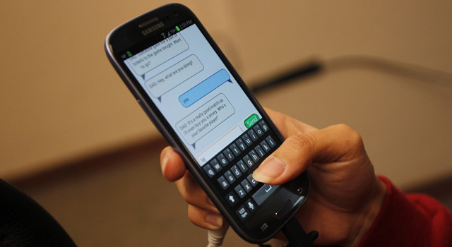

Accessing Twitter via SMS
-
SMS the following number: 9248948837 with a word of your choice. You will receive a message from Twitter in response, asking if you are already signed up or if you want to sign up.
-
Create a username and password by following the provided directions (given by Twitter). If you are new to Twitter, you will have to SMS both your desired username and password – don’t worry, this is 100% safe.
-
Once you’ve created an account, you will receive a account confirmation SMS from Twitter.
-
Once registration has been completed, you will be able to ‘tweet’/post on Twitter directly through SMS.
-
IMPORTANT: Make sure to end your tweets with #ChennaiHelpMe. We will only be able to track your tweets if you do this!
